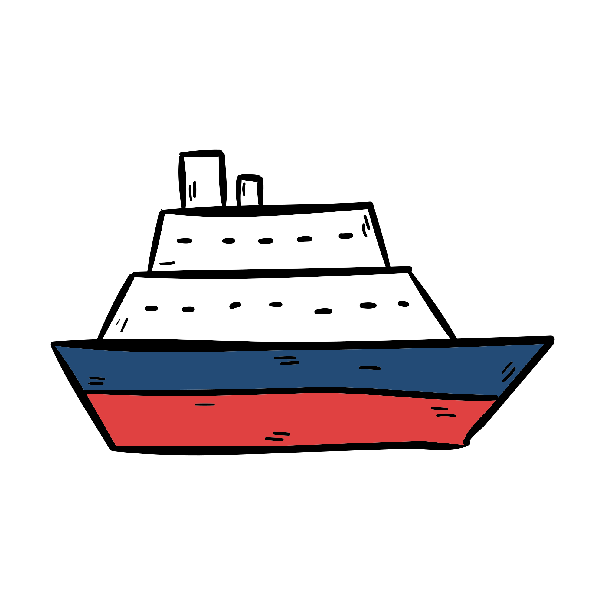

<div class="ibilbidea">
    <div class="container">
        <ul class="timeline">
        <li
            *ngFor="let event of events; let i = index"
            class="event"
            [class.left]="i % 2 === 0"
            [class.right]="i % 2 !== 0"
            [attr.data-date]="event.date"
        >
            <h3 class="title">Abiapuntua: <span class="fw-normal">{{ event.origen }}</span></h3>
            <h3 class="title">Helmuga: <span class="fw-normal">{{ event.destino }}</span></h3>
            <p>{{ event.description }}</p>
        </li>
        </ul>
    </div>
    <svg id="timeline-svg" viewBox="0 0 1000 400" preserveAspectRatio="none">
        <path
          id="timeline-path"
          d="M0,200 Q250,50 500,200 T1000,200"
          fill="none"
          stroke="#ADD8E6"
          stroke-width="2"
        />
      </svg>
      <svg viewBox="0 0 1000 400" xmlns="http://www.w3.org/2000/svg" preserveAspectRatio="none">
        <!-- Fondo azul claro siguiendo el path principal -->
        <path
          d="M0,200 Q250,50 500,200 T1000,200 L1000,400 L0,400 Z"
          fill="#ADD8E6"
          stroke="none"
        />
      
        <!-- Olas adicionales simulando agua de mar -->
        <path
          d="M0,220 Q200,180 400,220 T1000,220 L1000,400 L0,400 Z"
          fill="#87CEEB"
          stroke="none"
          opacity="0.8"
        />
        <path
          d="M0,240 Q300,210 600,240 T1000,240 L1000,400 L0,400 Z"
          fill="#4682B4"
          stroke="none"
          opacity="0.6"
        />
      </svg>
      <div id="ship">
        
      </div>
</div>